#loading the packages needed for this exercise
library(ggplot2)
library(dplyr)
library(here)
library(kableExtra)
library(tidymodels)
library(carat)
library(pROC)Fitting Exercise
Module 8: Module Fitting
The following exercise uses tidymodel framework to practice model fitting on data provied from:
Loading Data
#Reading the data into RStudio
data <- read.csv(here("./fitting-exercise/Mavoglurant_A2121_nmpk.csv"))
#Reviewing the data with summary() and str()
summary(data) ID CMT EVID EVI2
Min. :793.0 Min. :1.000 Min. :0.00000 Min. :0.0000
1st Qu.:832.0 1st Qu.:2.000 1st Qu.:0.00000 1st Qu.:0.0000
Median :860.0 Median :2.000 Median :0.00000 Median :0.0000
Mean :858.8 Mean :1.926 Mean :0.07394 Mean :0.1613
3rd Qu.:888.0 3rd Qu.:2.000 3rd Qu.:0.00000 3rd Qu.:0.0000
Max. :915.0 Max. :2.000 Max. :1.00000 Max. :4.0000
MDV DV LNDV AMT
Min. :0.00000 Min. : 0.00 Min. :0.000 Min. : 0.000
1st Qu.:0.00000 1st Qu.: 23.52 1st Qu.:3.158 1st Qu.: 0.000
Median :0.00000 Median : 74.20 Median :4.306 Median : 0.000
Mean :0.09373 Mean : 179.93 Mean :4.085 Mean : 2.763
3rd Qu.:0.00000 3rd Qu.: 283.00 3rd Qu.:5.645 3rd Qu.: 0.000
Max. :1.00000 Max. :1730.00 Max. :7.456 Max. :50.000
TIME DOSE OCC RATE
Min. : 0.000 Min. :25.00 Min. :1.000 Min. : 0.00
1st Qu.: 0.583 1st Qu.:25.00 1st Qu.:1.000 1st Qu.: 0.00
Median : 2.250 Median :37.50 Median :1.000 Median : 0.00
Mean : 5.851 Mean :37.37 Mean :1.378 Mean : 16.55
3rd Qu.: 6.363 3rd Qu.:50.00 3rd Qu.:2.000 3rd Qu.: 0.00
Max. :48.217 Max. :50.00 Max. :2.000 Max. :300.00
AGE SEX RACE WT
Min. :18.0 Min. :1.000 Min. : 1.000 Min. : 56.60
1st Qu.:26.0 1st Qu.:1.000 1st Qu.: 1.000 1st Qu.: 73.30
Median :31.0 Median :1.000 Median : 1.000 Median : 82.60
Mean :32.9 Mean :1.128 Mean : 7.415 Mean : 83.16
3rd Qu.:40.0 3rd Qu.:1.000 3rd Qu.: 2.000 3rd Qu.: 90.60
Max. :50.0 Max. :2.000 Max. :88.000 Max. :115.30
HT
Min. :1.520
1st Qu.:1.710
Median :1.780
Mean :1.762
3rd Qu.:1.820
Max. :1.930 str(data)'data.frame': 2678 obs. of 17 variables:
$ ID : int 793 793 793 793 793 793 793 793 793 793 ...
$ CMT : int 1 2 2 2 2 2 2 2 2 2 ...
$ EVID: int 1 0 0 0 0 0 0 0 0 0 ...
$ EVI2: int 1 0 0 0 0 0 0 0 0 0 ...
$ MDV : int 1 0 0 0 0 0 0 0 0 0 ...
$ DV : num 0 491 605 556 310 237 147 101 72.4 52.6 ...
$ LNDV: num 0 6.2 6.41 6.32 5.74 ...
$ AMT : num 25 0 0 0 0 0 0 0 0 0 ...
$ TIME: num 0 0.2 0.25 0.367 0.533 0.7 1.2 2.2 3.2 4.2 ...
$ DOSE: num 25 25 25 25 25 25 25 25 25 25 ...
$ OCC : int 1 1 1 1 1 1 1 1 1 1 ...
$ RATE: int 75 0 0 0 0 0 0 0 0 0 ...
$ AGE : int 42 42 42 42 42 42 42 42 42 42 ...
$ SEX : int 1 1 1 1 1 1 1 1 1 1 ...
$ RACE: int 2 2 2 2 2 2 2 2 2 2 ...
$ WT : num 94.3 94.3 94.3 94.3 94.3 94.3 94.3 94.3 94.3 94.3 ...
$ HT : num 1.77 1.77 1.77 1.77 1.77 ...Data Processing and Exploration
The data was cleaned and filtered. I adjusted the column type of the DOSE variable to a factor for clarity and removed entries where OCC is equal to 2. Additionally, I filtered out observations with TIME equal to 0.
Data visualization and exploration are essential for understanding the underlying structure and patterns within a dataset. I examined the frequency distribution of variables, allowing me to gain insights into their central tendencies, spread, and potential outliers. These visualizations help identify relationships between variables, detect anomalies, and assess the quality of the data, ultimately informing subsequent analyses and modeling decisions.
# Adjusting the column to factor for clarity when plotted
data$DOSE <- as.factor(data$DOSE)
# Plotted DV vs Time, stratified by dose
ggplot(data, aes(x = TIME, y = DV, color = DOSE)) +
geom_line() +
labs(x = "Time", y = "DV", color = "DOSE") +
theme_minimal()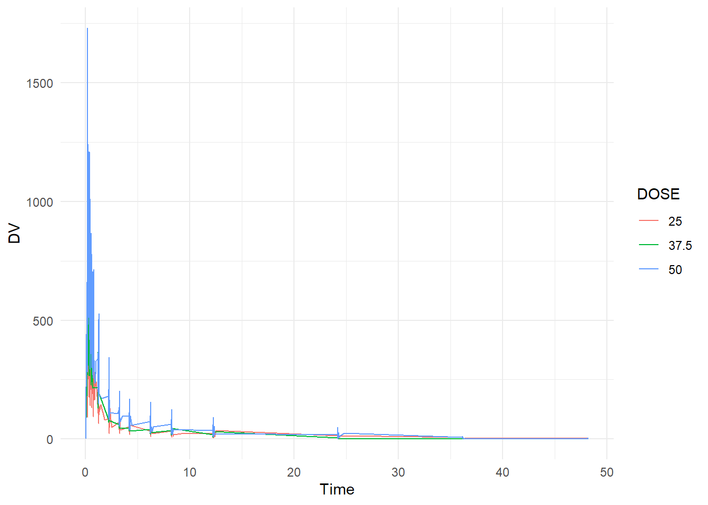
# Using Facet to show the difference
ggplot(data, aes(x = TIME, y = DV, color = DOSE)) +
geom_line() +
facet_wrap(~DOSE) +
labs(x = "Time", y = "DV", color = "Dose") +
theme_minimal()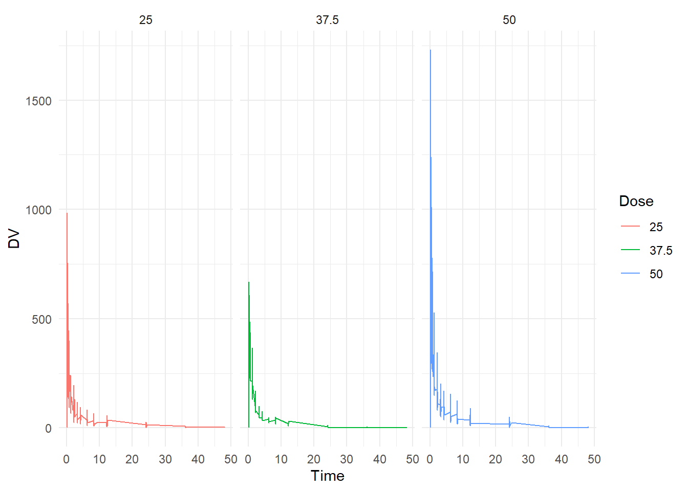
# Removing entries of OCC=2
data <- data %>%
filter(OCC !=2)
#Confirming OCC=2 is removed
summary(data$OCC) Min. 1st Qu. Median Mean 3rd Qu. Max.
1 1 1 1 1 1 # Filter out any observation of Time=0
data_wo_time0 <- data %>%
filter(TIME != 0)
summary(data_wo_time0) ID CMT EVID EVI2 MDV
Min. :793.0 Min. :2 Min. :0 Min. :0 Min. :0.00000
1st Qu.:818.0 1st Qu.:2 1st Qu.:0 1st Qu.:0 1st Qu.:0.00000
Median :849.0 Median :2 Median :0 Median :0 Median :0.00000
Mean :850.8 Mean :2 Mean :0 Mean :0 Mean :0.03301
3rd Qu.:882.0 3rd Qu.:2 3rd Qu.:0 3rd Qu.:0 3rd Qu.:0.00000
Max. :915.0 Max. :2 Max. :0 Max. :0 Max. :1.00000
DV LNDV AMT TIME DOSE
Min. : 0.0 Min. :0.000 Min. :0 Min. : 0.200 25 :744
1st Qu.: 28.4 1st Qu.:3.346 1st Qu.:0 1st Qu.: 0.583 37.5:177
Median : 85.2 Median :4.445 Median :0 Median : 3.200 50 :624
Mean : 189.9 Mean :4.335 Mean :0 Mean : 6.930
3rd Qu.: 302.0 3rd Qu.:5.710 3rd Qu.:0 3rd Qu.: 8.250
Max. :1550.0 Max. :7.346 Max. :0 Max. :48.217
OCC RATE AGE SEX RACE
Min. :1 Min. :0 Min. :18.00 Min. :1.000 Min. : 1.000
1st Qu.:1 1st Qu.:0 1st Qu.:26.00 1st Qu.:1.000 1st Qu.: 1.000
Median :1 Median :0 Median :31.00 Median :1.000 Median : 1.000
Mean :1 Mean :0 Mean :33.12 Mean :1.136 Mean : 6.968
3rd Qu.:1 3rd Qu.:0 3rd Qu.:41.00 3rd Qu.:1.000 3rd Qu.: 2.000
Max. :1 Max. :0 Max. :50.00 Max. :2.000 Max. :88.000
WT HT
Min. : 56.60 Min. :1.520
1st Qu.: 73.10 1st Qu.:1.700
Median : 82.10 Median :1.770
Mean : 82.35 Mean :1.757
3rd Qu.: 90.10 3rd Qu.:1.810
Max. :115.30 Max. :1.930 # Summarization of DV Variable (observed value)
summarized_data <- data_wo_time0 %>%
group_by(ID) %>%
summarize(Y = sum(DV))
summary(summarized_data) # Frame with 120x2 ID Y
Min. :793.0 Min. : 826.4
1st Qu.:822.8 1st Qu.:1700.5
Median :853.5 Median :2349.1
Mean :853.7 Mean :2445.4
3rd Qu.:884.2 3rd Qu.:3050.2
Max. :915.0 Max. :5606.6 # Creating Data Frame where Time==0
Time0_df <- data %>%
filter(TIME == 0)
summary(Time0_df) # Frame with 120 x 17 ID CMT EVID EVI2 MDV DV
Min. :793.0 Min. :1 Min. :1 Min. :1 Min. :1 Min. :0
1st Qu.:822.8 1st Qu.:1 1st Qu.:1 1st Qu.:1 1st Qu.:1 1st Qu.:0
Median :853.5 Median :1 Median :1 Median :1 Median :1 Median :0
Mean :853.7 Mean :1 Mean :1 Mean :1 Mean :1 Mean :0
3rd Qu.:884.2 3rd Qu.:1 3rd Qu.:1 3rd Qu.:1 3rd Qu.:1 3rd Qu.:0
Max. :915.0 Max. :1 Max. :1 Max. :1 Max. :1 Max. :0
LNDV AMT TIME DOSE OCC RATE
Min. :0 Min. :25.00 Min. :0 25 :59 Min. :1 Min. : 75.0
1st Qu.:0 1st Qu.:25.00 1st Qu.:0 37.5:12 1st Qu.:1 1st Qu.:150.0
Median :0 Median :37.50 Median :0 50 :49 Median :1 Median :225.0
Mean :0 Mean :36.46 Mean :0 Mean :1 Mean :218.1
3rd Qu.:0 3rd Qu.:50.00 3rd Qu.:0 3rd Qu.:1 3rd Qu.:300.0
Max. :0 Max. :50.00 Max. :0 Max. :1 Max. :300.0
AGE SEX RACE WT
Min. :18.00 Min. :1.000 Min. : 1.0 Min. : 56.60
1st Qu.:26.00 1st Qu.:1.000 1st Qu.: 1.0 1st Qu.: 73.17
Median :31.00 Median :1.000 Median : 1.0 Median : 82.10
Mean :33.00 Mean :1.133 Mean : 7.2 Mean : 82.55
3rd Qu.:40.25 3rd Qu.:1.000 3rd Qu.: 2.0 3rd Qu.: 90.10
Max. :50.00 Max. :2.000 Max. :88.0 Max. :115.30
HT
Min. :1.520
1st Qu.:1.700
Median :1.770
Mean :1.759
3rd Qu.:1.813
Max. :1.930 # Combining the two data frames with join function
combined_data <- left_join(summarized_data, Time0_df, by = "ID")
combined_data # Frame with 120 x 18# A tibble: 120 × 18
ID Y CMT EVID EVI2 MDV DV LNDV AMT TIME DOSE OCC RATE
<int> <dbl> <int> <int> <int> <int> <dbl> <dbl> <dbl> <dbl> <fct> <int> <int>
1 793 2691. 1 1 1 1 0 0 25 0 25 1 75
2 794 2639. 1 1 1 1 0 0 25 0 25 1 150
3 795 2150. 1 1 1 1 0 0 25 0 25 1 150
4 796 1789. 1 1 1 1 0 0 25 0 25 1 150
5 797 3126. 1 1 1 1 0 0 25 0 25 1 150
6 798 2337. 1 1 1 1 0 0 25 0 25 1 150
7 799 3007. 1 1 1 1 0 0 25 0 25 1 150
8 800 2796. 1 1 1 1 0 0 25 0 25 1 150
9 801 3866. 1 1 1 1 0 0 25 0 25 1 150
10 802 1762. 1 1 1 1 0 0 25 0 25 1 150
# ℹ 110 more rows
# ℹ 5 more variables: AGE <int>, SEX <int>, RACE <int>, WT <dbl>, HT <dbl>combined_data <- combined_data %>%
mutate(RACE = factor(RACE),
SEX = factor(SEX)) %>%
select(Y, DOSE, AGE, SEX, RACE, WT, HT)EDA Revisited
I summarized the DV variable, created summary statistics, and visualized the distribution of various variables using histograms and bar plots.
Without a codebook, many of the graphs produce remain unclear on what type of information it is presenting. However, we can discern from the sex plot, there is an overwhelming response from one race over the other. As for the scatterplots, we can tell there’s a slight negative relationship between the numeric predictors and Y. The higher the dosage, the greater the Y value. As ther was no codebook, we’re unable to clearly determine what the summation of DV reflects, but we can assume it is some observed value that’s related to the dosage of a product.
# Producing a summary statistics of variable Y
summary_stats <- combined_data %>%
group_by(DOSE) %>%
summarise(
Mean_Y = mean(Y),
Median_Y = median(Y),
Min_Y = min(Y),
Max_Y = max(Y),
SD_Y = sd(Y)
)
summary_stats# A tibble: 3 × 6
DOSE Mean_Y Median_Y Min_Y Max_Y SD_Y
<fct> <dbl> <dbl> <dbl> <dbl> <dbl>
1 25 1783. 1666. 826. 3866. 601.
2 37.5 2464. 2388. 1801. 3463. 488.
3 50 3239. 3194. 1949. 5607. 787.# Creating a table of the dataframe with kable package
summary_stats %>%
kable() %>%
kable_styling(full_width = FALSE) %>%
add_header_above(c(" " = 1, "Y Summary Statistics" = 5))| DOSE | Mean_Y | Median_Y | Min_Y | Max_Y | SD_Y |
|---|---|---|---|---|---|
| 25 | 1782.669 | 1666.100 | 826.43 | 3865.79 | 600.9420 |
| 37.5 | 2463.913 | 2388.335 | 1800.79 | 3462.59 | 488.4981 |
| 50 | 3238.866 | 3193.980 | 1948.80 | 5606.58 | 786.6904 |
kable(summary_stats)| DOSE | Mean_Y | Median_Y | Min_Y | Max_Y | SD_Y |
|---|---|---|---|---|---|
| 25 | 1782.669 | 1666.100 | 826.43 | 3865.79 | 600.9420 |
| 37.5 | 2463.913 | 2388.335 | 1800.79 | 3462.59 | 488.4981 |
| 50 | 3238.866 | 3193.980 | 1948.80 | 5606.58 | 786.6904 |
# Plotting Y to show Frequency Distribution
ggplot(combined_data, aes(x = Y)) +
geom_histogram(fill = "skyblue", color = "black") +
labs(x = "Y", y = "Frequency") +
theme_minimal()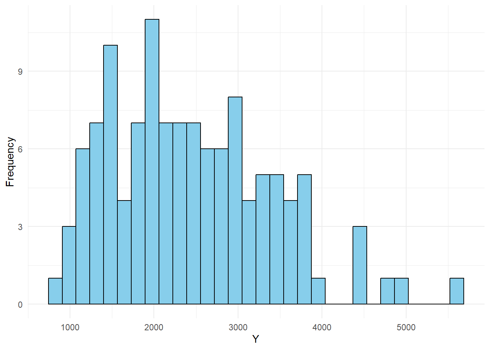
# Plotting Age to show Frequency Distribution
ggplot(combined_data, aes(x=AGE))+
geom_histogram(fill = "skyblue", color = "black") +
labs(x = "Age", y = "Frequency") +
theme_minimal()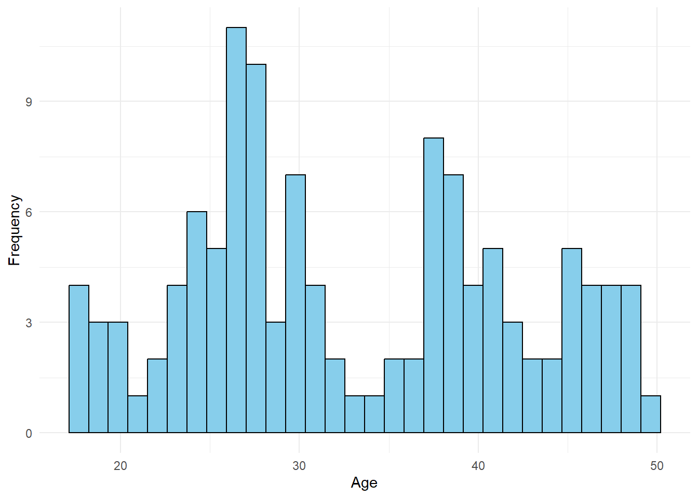
# Plotting Weight to show Frequency Distribution
ggplot(combined_data, aes(x=WT))+
geom_histogram(fill = "skyblue", color = "black") +
labs(x = "Weight", y = "Frequency") +
theme_minimal()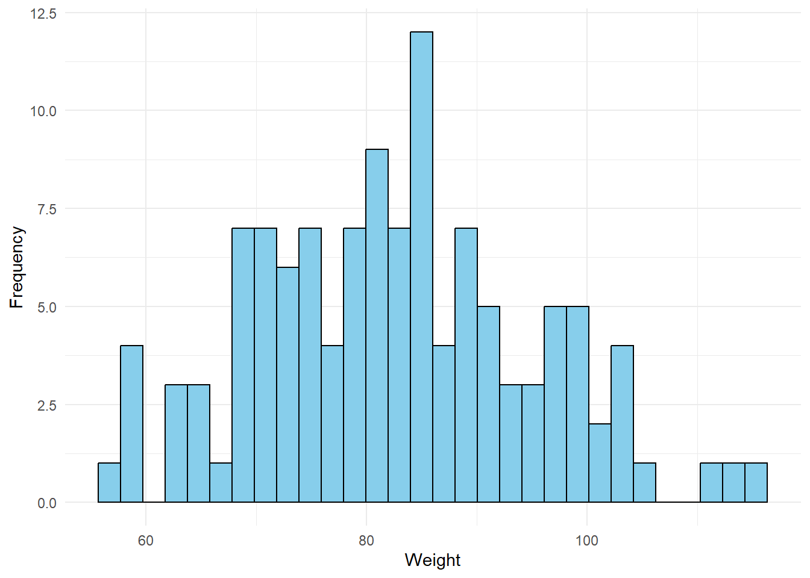
# Plotting Height to show Frequency Distribution
ggplot(combined_data, aes(x=HT))+
geom_histogram(fill = "skyblue", color = "black") +
labs(x = "Height", y = "Frequency") +
theme_minimal()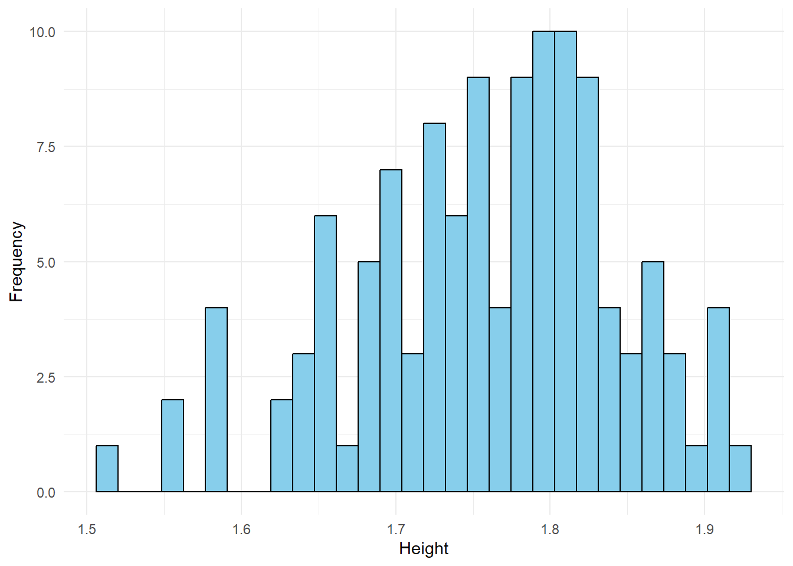
# Determining the distribution of the Dose factorand plotting it as a bar graph
table(combined_data$DOSE)
25 37.5 50
59 12 49 ggplot(combined_data, aes(x=DOSE, fill=DOSE))+
labs(x = "Dose", y = "Frequency")+
geom_bar()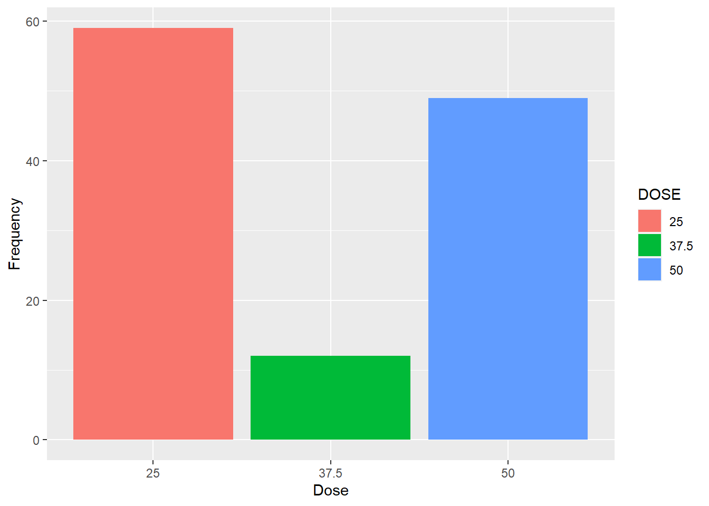
# Determining the distribution of the Sex factor and plotting it as a bar graph
table(combined_data$SEX)
1 2
104 16 ggplot(combined_data, aes(x=SEX, fill=SEX))+
labs(x = "Sex", y = "Frequency")+
geom_bar()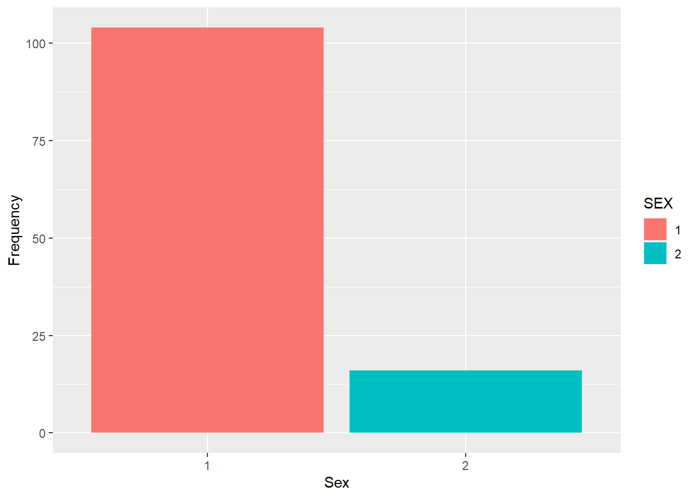
#Determining the distribution of the RACE variable and plotting it as a bar graph
table(combined_data$RACE)
1 2 7 88
74 36 2 8 ggplot(combined_data, aes(x=RACE, fill=RACE))+
labs(x = "Race", y = "Frequency")+
geom_bar()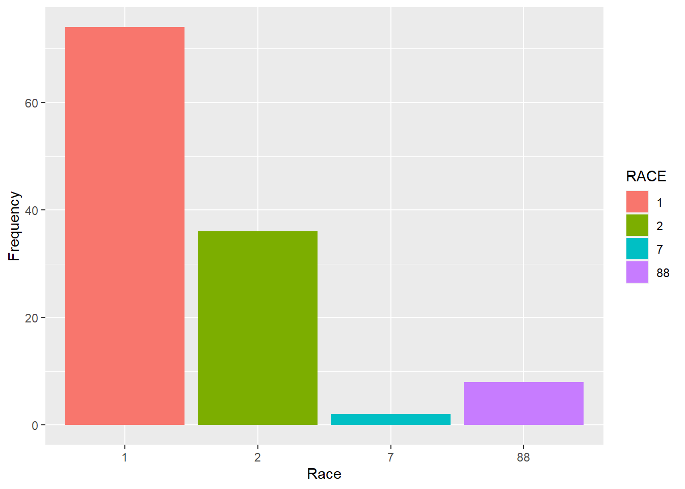
Scatterplots and boxplots were created to visualize relationships between variables and explore distributions.
# Scatterplot of Y vs other numerical predictors
ggplot(combined_data, aes(x = AGE, y = Y)) +
geom_point()+
geom_smooth(method = "lm")+
labs(X = "Age", y = "Sum of DV")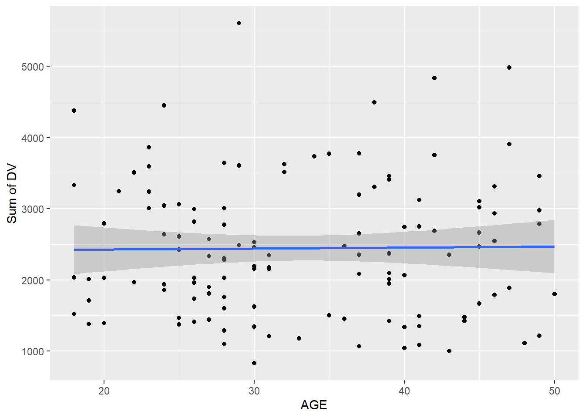
# Y Vs Weight
ggplot(combined_data, aes(x = WT, y = Y, color=DOSE)) +
geom_point()+
geom_smooth(method = "lm")+
labs(X = "Weight", y = "Sum of DV")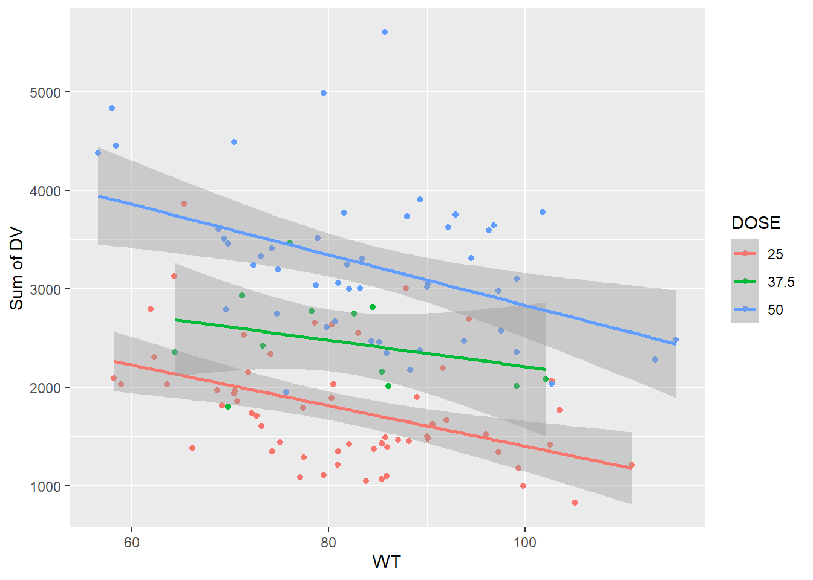
# Y Vs Height
ggplot(combined_data, aes(x = HT, y = Y, color = DOSE)) +
geom_point()+
geom_smooth(method = "lm")+
labs(X = "Height", y = "Sum of DV")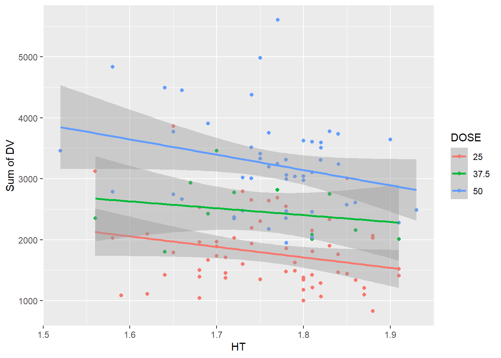
# Boxplot of Y by SEX
ggplot(combined_data, aes(x = SEX, y = Y)) +
geom_boxplot()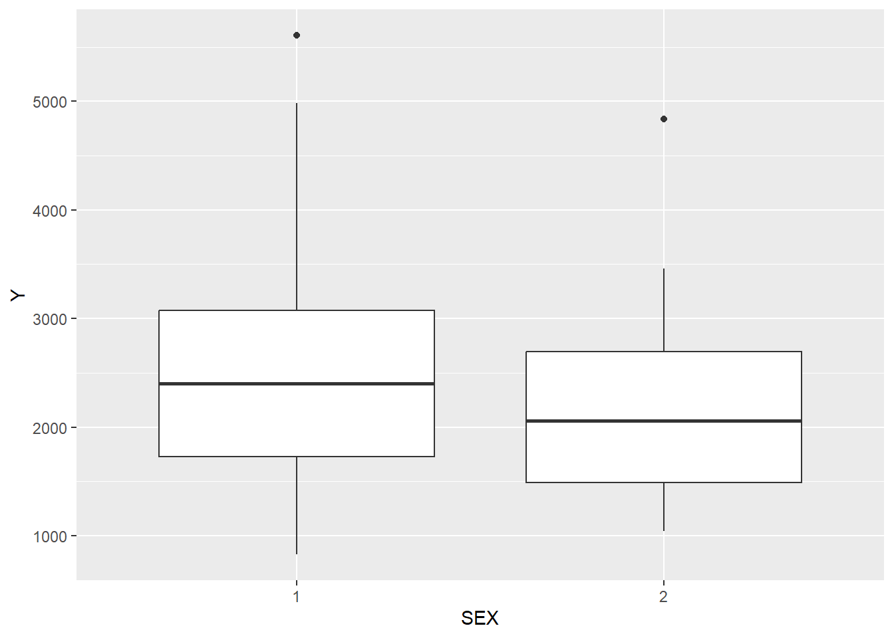
# Boxplot of Y by RACE
ggplot(combined_data, aes(x = RACE, y = Y)) +
geom_boxplot()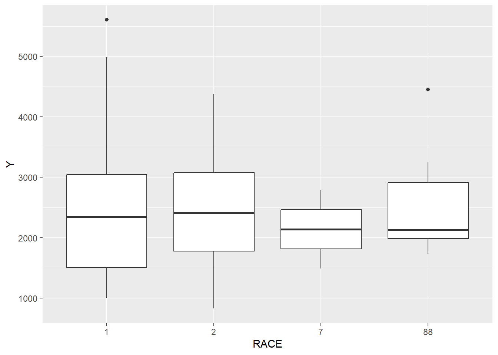
# Boxplot of Y by DOSE
ggplot(combined_data, aes(x = DOSE, y = Y)) +
geom_boxplot()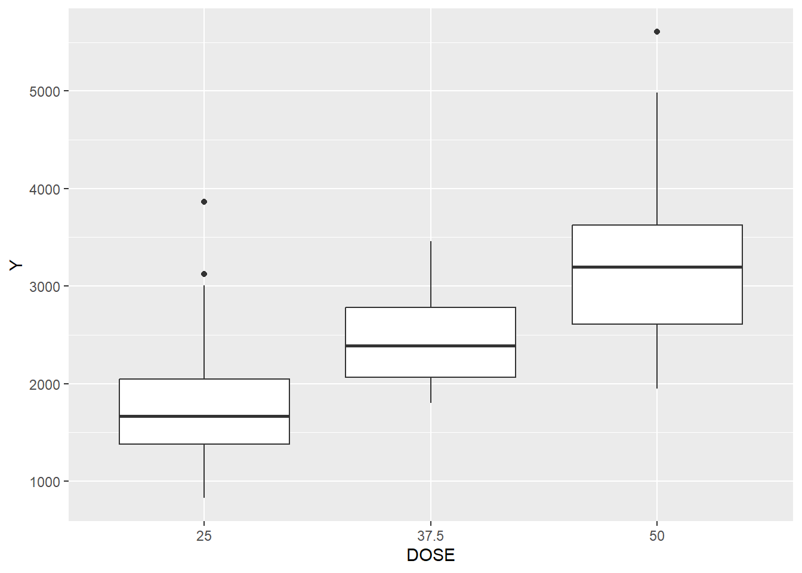
# Pair/Correlation plots of the numerical variables
# Pair plot of selected variables
pairplot <- pairs(combined_data[, c("Y", "AGE", "WT", "HT")])
# Correlation matrix
correlation_matrix <- cor(combined_data[, c("Y", "AGE", "WT", "HT")])Model Fitting
I built linear regression models using tidymodels with DOSE as the main predictor and with all predictors. I also fit logistic regression models to predict SEX using DOSE as the main predictor and using all predictors.
RMSD and R-squared Calculation: I manually calculated RMSD and R-squared values for the linear regression models using tidymodels. I evaluated the performance of the logistic regression models by computing accuracy and ROC-AUC.
# Creating a Linear Regression model specification
lm_spec <- linear_reg() %>%
set_engine("lm") %>%
set_mode("regression")
# Fitting a linear model to the continuous outcome (Y) and DOSE
lm_fit <- lm_spec %>%
fit(Y ~ DOSE, combined_data)
# Sharing the result and summary of the fit
summary(lm_fit$fit)
Call:
stats::lm(formula = Y ~ DOSE, data = data)
Residuals:
Min 1Q Median 3Q Max
-1290.1 -445.6 -90.9 352.2 2367.7
Coefficients:
Estimate Std. Error t value Pr(>|t|)
(Intercept) 1782.67 87.85 20.292 < 2e-16 ***
DOSE37.5 681.24 213.69 3.188 0.00184 **
DOSE50 1456.20 130.43 11.165 < 2e-16 ***
---
Signif. codes: 0 '***' 0.001 '**' 0.01 '*' 0.05 '.' 0.1 ' ' 1
Residual standard error: 674.8 on 117 degrees of freedom
Multiple R-squared: 0.5159, Adjusted R-squared: 0.5076
F-statistic: 62.33 on 2 and 117 DF, p-value: < 2.2e-16# Fit linear model using all predictors
full_linear_model <- lm_spec %>%
fit(Y ~ ., combined_data)
# Print summary of the linear model
summary(full_linear_model$fit)
Call:
stats::lm(formula = Y ~ ., data = data)
Residuals:
Min 1Q Median 3Q Max
-1496.97 -362.81 -71.26 285.84 2421.48
Coefficients:
Estimate Std. Error t value Pr(>|t|)
(Intercept) 4890.923 1822.710 2.683 0.008415 **
DOSE37.5 663.683 200.448 3.311 0.001258 **
DOSE50 1499.048 122.462 12.241 < 2e-16 ***
AGE 3.521 7.895 0.446 0.656517
SEX2 -360.048 217.775 -1.653 0.101121
RACE2 148.883 129.821 1.147 0.253936
RACE7 -420.950 451.163 -0.933 0.352846
RACE88 -65.300 246.961 -0.264 0.791954
WT -23.281 6.440 -3.615 0.000454 ***
HT -741.050 1108.100 -0.669 0.505051
---
Signif. codes: 0 '***' 0.001 '**' 0.01 '*' 0.05 '.' 0.1 ' ' 1
Residual standard error: 616.6 on 110 degrees of freedom
Multiple R-squared: 0.62, Adjusted R-squared: 0.5889
F-statistic: 19.94 on 9 and 110 DF, p-value: < 2.2e-16# For the model with DOSE as the predictor
dose_predictions <- predict(lm_fit$fit)
dose_rmsd <- sqrt(mean((combined_data$Y - dose_predictions)^2))
# For the model with all predictors
full_predictions <- predict(full_linear_model$fit)
full_rmsd <- sqrt(mean((combined_data$Y - full_predictions)^2))
# For the model with DOSE as the predictor
dose_r_squared <- summary(lm_fit$fit)$r.squared
# For the model with all predictors
full_r_squared <- summary(full_linear_model$fit)$r.squared
#Printing R squared value and RMSD
print(dose_rmsd)[1] 666.3137print(full_r_squared)[1] 0.6200016print(dose_r_squared)[1] 0.5158598print(full_rmsd)[1] 590.3153# Fit a logistic model using the main predictor (DOSE)
logistic_dose <- glm(SEX ~ DOSE, data = combined_data, family = binomial)
summary(logistic_dose)
Call:
glm(formula = SEX ~ DOSE, family = binomial, data = combined_data)
Coefficients:
Estimate Std. Error z value Pr(>|z|)
(Intercept) -1.5892 0.3470 -4.580 4.65e-06 ***
DOSE37.5 -0.0202 0.8488 -0.024 0.981
DOSE50 -0.8311 0.6266 -1.326 0.185
---
Signif. codes: 0 '***' 0.001 '**' 0.01 '*' 0.05 '.' 0.1 ' ' 1
(Dispersion parameter for binomial family taken to be 1)
Null deviance: 94.242 on 119 degrees of freedom
Residual deviance: 92.221 on 117 degrees of freedom
AIC: 98.221
Number of Fisher Scoring iterations: 5# Fit a logistic model using all predictors
logit_all <- glm(SEX ~ ., data = combined_data, family = binomial)
summary(logit_all)
Call:
glm(formula = SEX ~ ., family = binomial, data = combined_data)
Coefficients:
Estimate Std. Error z value Pr(>|z|)
(Intercept) 5.914e+01 1.760e+01 3.360 0.000779 ***
Y -1.113e-03 9.585e-04 -1.162 0.245397
DOSE37.5 -2.511e+00 2.041e+00 -1.230 0.218609
DOSE50 -6.176e-01 1.909e+00 -0.324 0.746303
AGE 1.128e-01 6.876e-02 1.640 0.100904
RACE2 -2.271e+00 1.480e+00 -1.535 0.124841
RACE7 -4.429e-01 4.335e+00 -0.102 0.918640
RACE88 -2.020e+00 2.428e+00 -0.832 0.405545
WT -9.234e-02 7.992e-02 -1.155 0.247924
HT -3.199e+01 1.040e+01 -3.076 0.002097 **
---
Signif. codes: 0 '***' 0.001 '**' 0.01 '*' 0.05 '.' 0.1 ' ' 1
(Dispersion parameter for binomial family taken to be 1)
Null deviance: 94.242 on 119 degrees of freedom
Residual deviance: 30.518 on 110 degrees of freedom
AIC: 50.518
Number of Fisher Scoring iterations: 8# Predictions for the model using the main predictor (DOSE)
y_pred_main <- ifelse(predict(logistic_dose, newdata = combined_data, type = "response") > 0.5, 1, 0)
# Predictions for the model using all predictors
y_pred_all <- ifelse(predict(logit_all, newdata = combined_data, type = "response") > 0.5, 1, 0)
# True labels from the test data
y_true <- combined_data$SEX
# Compute accuracy
accuracy_main <- mean(y_pred_main == y_true)
accuracy_all <- mean(y_pred_all == y_true)
print(accuracy_main)[1] 0print(accuracy_all)[1] 0.01666667# Compute ROC-AUC
roc_auc_main <- roc(y_true, predict(logistic_dose, newdata = combined_data, type = "response"))$auc
roc_auc_all <- roc(y_true, predict(logit_all, newdata = combined_data, type = "response"))$auc
print(roc_auc_main)Area under the curve: 0.5919print( roc_auc_all)Area under the curve: 0.9832Module 10: Model Improvement
The following exercise is performed to practice model fitting and resampling.
#Loading the packages needed for this exercise
library(ggplot2)
library(dplyr)
library(here)
library(tidymodels)# Set Seed for reproducibility
rngseed = 1234
set.seed(rngseed)Data Preparation
I previously calculated the RMSE by hand, but I wanted to attempt to calculate it through the metrics() function from the tidymodels. The following data preparation is written with this as a reference:
The data provided from the exercise above is splitted with 75% of it dedicated to the training data and the remaining 25% as testing data.
# Set Seed for reproducibility
set.seed(rngseed)
# Select only the specified variables from the combined data (we're excluding race)
combined_subset <- combined_data %>%
select(Y, DOSE, AGE, SEX, WT, HT)
# View the structure of the updated dataframe
str(combined_data)tibble [120 × 7] (S3: tbl_df/tbl/data.frame)
$ Y : num [1:120] 2691 2639 2150 1789 3126 ...
$ DOSE: Factor w/ 3 levels "25","37.5","50": 1 1 1 1 1 1 1 1 1 1 ...
$ AGE : int [1:120] 42 24 31 46 41 27 23 20 23 28 ...
$ SEX : Factor w/ 2 levels "1","2": 1 1 1 2 2 1 1 1 1 1 ...
$ RACE: Factor w/ 4 levels "1","2","7","88": 2 2 1 1 2 2 1 4 2 1 ...
$ WT : num [1:120] 94.3 80.4 71.8 77.4 64.3 ...
$ HT : num [1:120] 1.77 1.76 1.81 1.65 1.56 ...# Create training data by alloting 3/4 of the data for training
data_split <- initial_split(combined_data, prop = 3/4)
# Create data frames for the two sets:
train_data <- training(data_split)
test_data <- testing(data_split)Model Fitting
The data sets below is fitted to a linear regression model. The linear regression mode specification is initially declared and applied to the data. The first model(lm1) uses DOSE as a predictor and Y as the continuous outcome of interest. The second model (lm2) fits Y, the continuous outcome of interest to all predictors. Both models are fitted to the training data.
I then fitted a null model to the training data as well, for future comparison and analysis.
# Set Seed for reproducibility
set.seed(rngseed)
# Creating a Linear Regression model specification
lm_spec <- linear_reg() %>%
set_engine("lm") %>%
set_mode("regression")
# Fitting a linear model to the continuous outcome (Y) and DOSE
lm1 <- lm_spec %>%
fit(Y ~ DOSE, train_data)
tidy(lm1$fit)# Viewing the model# A tibble: 3 × 5
term estimate std.error statistic p.value
<chr> <dbl> <dbl> <dbl> <dbl>
1 (Intercept) 1873. 109. 17.2 1.07e-29
2 DOSE37.5 651. 275. 2.36 2.03e- 2
3 DOSE50 1336. 158. 8.45 5.97e-13# Fit a model to Y with all predictors
lm2 <- lm_spec %>%
fit(Y~., data=train_data)
tidy(lm2$fit)# Viewing the model# A tibble: 10 × 5
term estimate std.error statistic p.value
<chr> <dbl> <dbl> <dbl> <dbl>
1 (Intercept) 5486. 2238. 2.45 1.64e- 2
2 DOSE37.5 677. 264. 2.57 1.21e- 2
3 DOSE50 1429. 152. 9.39 1.53e-14
4 AGE 1.34 10.0 0.134 8.94e- 1
5 SEX2 -529. 290. -1.82 7.19e- 2
6 RACE2 173. 160. 1.08 2.82e- 1
7 RACE7 -360. 488. -0.739 4.62e- 1
8 RACE88 -96.2 285. -0.338 7.36e- 1
9 WT -24.7 7.92 -3.12 2.52e- 3
10 HT -936. 1386. -0.675 5.02e- 1# Creating a null model specification with parsnip
null_mod <- null_model() %>%
set_engine("parsnip") %>%
set_mode("regression") %>%
translate()
# Fit the null model to the data
null_fit <- null_mod %>%
fit(Y ~ ., data = train_data)Model Performance
To determine the performance of the models above, I calculate the RMSE and R-squared value for each models.
I performed the predictions on each of the models. The predicted data is added to the original observed values for ease of comparison. From that, metrics() is used to calculate the performance metrics of the model predictions.
From that, we were able to receive the RMSE and R-squared values.
I used the following resource as references for the code below:
# Set Seed for reproducibility
set.seed(rngseed)
# Perform prediction on lm1
lm1_predict <- predict(lm1, train_data) %>%
bind_cols(train_data) # Combining predicted value with observed value
# Perform prediction on lm2
lm2_predict <- predict(lm2, train_data)%>%
bind_cols(train_data) # Combining predicted value with observed value
# Predict using the null model
null_predictions <- predict(null_fit, new_data = train_data)%>%
bind_cols(train_data) # Combining predicted value with observed value
# Calculate performance metrics of the models
metrics(lm1_predict, truth = Y, estimate = .pred)# A tibble: 3 × 3
.metric .estimator .estimate
<chr> <chr> <dbl>
1 rmse standard 703.
2 rsq standard 0.451
3 mae standard 546. metrics(lm2_predict, truth = Y, estimate = .pred)# A tibble: 3 × 3
.metric .estimator .estimate
<chr> <chr> <dbl>
1 rmse standard 619.
2 rsq standard 0.575
3 mae standard 469. metrics(null_predictions, truth = Y, estimate = .pred)# A tibble: 3 × 3
.metric .estimator .estimate
<chr> <chr> <dbl>
1 rmse standard 948.
2 rsq standard NA
3 mae standard 765.From the metrics() function, we were able to see that the RMSE values were 703, 619, and 948 for model 1, model 2, and the null model respectively. All of these values were within expectation.
Model Performance 2
To further assess the models, I re-sampled the data with a 10-fold cross-validation test. After resampling, I fitted the model to the newly resampled data set. This was done for DOSE and everything as a predictor respectively. Similar to what was performed above, the metrics were calculated with collect_metrics() function.
The following link was what I used as a referenced for the following code(s):
# For reproducibility
set.seed(rngseed)
# Set up resampling object with cross-validation folds of 10 folds
folds <- vfold_cv(train_data, v = 10)
folds # Verifying that it was created# 10-fold cross-validation
# A tibble: 10 × 2
splits id
<list> <chr>
1 <split [81/9]> Fold01
2 <split [81/9]> Fold02
3 <split [81/9]> Fold03
4 <split [81/9]> Fold04
5 <split [81/9]> Fold05
6 <split [81/9]> Fold06
7 <split [81/9]> Fold07
8 <split [81/9]> Fold08
9 <split [81/9]> Fold09
10 <split [81/9]> Fold10# Creating new model specification.
lm_spec2 <-
workflow() %>% # The workflow() function initializes an empty workflow object.
add_model(lm_spec) # The add_model() function adds a specified model spec to the workflow
# I'm using the linear regression spec that I added previously
# Re-fitting the model with the resamples with DOSE as a predictor
resampled_dose <-
lm_spec2 %>%
add_formula(Y ~ DOSE) %>%
fit_resamples(folds)
resampled_dose # Viewing the results# Resampling results
# 10-fold cross-validation
# A tibble: 10 × 4
splits id .metrics .notes
<list> <chr> <list> <list>
1 <split [81/9]> Fold01 <tibble [2 × 4]> <tibble [0 × 3]>
2 <split [81/9]> Fold02 <tibble [2 × 4]> <tibble [0 × 3]>
3 <split [81/9]> Fold03 <tibble [2 × 4]> <tibble [0 × 3]>
4 <split [81/9]> Fold04 <tibble [2 × 4]> <tibble [0 × 3]>
5 <split [81/9]> Fold05 <tibble [2 × 4]> <tibble [0 × 3]>
6 <split [81/9]> Fold06 <tibble [2 × 4]> <tibble [0 × 3]>
7 <split [81/9]> Fold07 <tibble [2 × 4]> <tibble [0 × 3]>
8 <split [81/9]> Fold08 <tibble [2 × 4]> <tibble [0 × 3]>
9 <split [81/9]> Fold09 <tibble [2 × 4]> <tibble [0 × 3]>
10 <split [81/9]> Fold10 <tibble [2 × 4]> <tibble [0 × 3]># Re-fitting the model with the resamples with everything as a predictor
resampled_all <-
lm_spec2 %>%
add_formula(Y ~ .) %>%
fit_resamples(folds)
resampled_all # Viewing the results# Resampling results
# 10-fold cross-validation
# A tibble: 10 × 4
splits id .metrics .notes
<list> <chr> <list> <list>
1 <split [81/9]> Fold01 <tibble [2 × 4]> <tibble [0 × 3]>
2 <split [81/9]> Fold02 <tibble [2 × 4]> <tibble [0 × 3]>
3 <split [81/9]> Fold03 <tibble [2 × 4]> <tibble [0 × 3]>
4 <split [81/9]> Fold04 <tibble [2 × 4]> <tibble [0 × 3]>
5 <split [81/9]> Fold05 <tibble [2 × 4]> <tibble [0 × 3]>
6 <split [81/9]> Fold06 <tibble [2 × 4]> <tibble [0 × 3]>
7 <split [81/9]> Fold07 <tibble [2 × 4]> <tibble [0 × 3]>
8 <split [81/9]> Fold08 <tibble [2 × 4]> <tibble [0 × 3]>
9 <split [81/9]> Fold09 <tibble [2 × 4]> <tibble [0 × 3]>
10 <split [81/9]> Fold10 <tibble [2 × 4]> <tibble [0 × 3]># Calculating performance metrics results from resampling
collect_metrics(resampled_dose)# A tibble: 2 × 6
.metric .estimator mean n std_err .config
<chr> <chr> <dbl> <int> <dbl> <chr>
1 rmse standard 697. 10 68.1 Preprocessor1_Model1
2 rsq standard 0.500 10 0.0605 Preprocessor1_Model1collect_metrics(resampled_all)# A tibble: 2 × 6
.metric .estimator mean n std_err .config
<chr> <chr> <dbl> <int> <dbl> <chr>
1 rmse standard 658. 10 66.6 Preprocessor1_Model1
2 rsq standard 0.569 10 0.0795 Preprocessor1_Model1In the initial resampling, the RMSE was 697 and 658 for model 1 (DOSE as predictor) and model 2 (everything as a predictor) respectively. These values are similar to the values produced in the original model assessment, with it being slightly lower for model 1 and slightly higher for model 2. The standard error was slightly higher for model 1 at 68.1 vs the 66.6 for model 2.
The assessment was then repeated with a new seed.
# Setting seed with a different value
set.seed(5678)
# Set up resampling object with cross-validation folds of 10 folds
folds2 <- vfold_cv(train_data, v = 10)
folds2 # Verifying that it was created# 10-fold cross-validation
# A tibble: 10 × 2
splits id
<list> <chr>
1 <split [81/9]> Fold01
2 <split [81/9]> Fold02
3 <split [81/9]> Fold03
4 <split [81/9]> Fold04
5 <split [81/9]> Fold05
6 <split [81/9]> Fold06
7 <split [81/9]> Fold07
8 <split [81/9]> Fold08
9 <split [81/9]> Fold09
10 <split [81/9]> Fold10# Creating new model specification.
lm_spec3 <-
workflow() %>% # The workflow() function initializes an empty workflow object.
add_model(lm_spec) # The add_model() function adds a specified model spec to the workflow
# I'm using the linear regression spec that I added previously
# Re-fitting the model with the resamples with DOSE as a predictor
resampled_dose2 <-
lm_spec3 %>%
add_formula(Y ~ DOSE) %>%
fit_resamples(folds2)
resampled_dose2 # Viewing the results# Resampling results
# 10-fold cross-validation
# A tibble: 10 × 4
splits id .metrics .notes
<list> <chr> <list> <list>
1 <split [81/9]> Fold01 <tibble [2 × 4]> <tibble [0 × 3]>
2 <split [81/9]> Fold02 <tibble [2 × 4]> <tibble [0 × 3]>
3 <split [81/9]> Fold03 <tibble [2 × 4]> <tibble [0 × 3]>
4 <split [81/9]> Fold04 <tibble [2 × 4]> <tibble [0 × 3]>
5 <split [81/9]> Fold05 <tibble [2 × 4]> <tibble [0 × 3]>
6 <split [81/9]> Fold06 <tibble [2 × 4]> <tibble [0 × 3]>
7 <split [81/9]> Fold07 <tibble [2 × 4]> <tibble [0 × 3]>
8 <split [81/9]> Fold08 <tibble [2 × 4]> <tibble [0 × 3]>
9 <split [81/9]> Fold09 <tibble [2 × 4]> <tibble [0 × 3]>
10 <split [81/9]> Fold10 <tibble [2 × 4]> <tibble [0 × 3]># Re-fitting the model with the resamples with everything as a predictor
resampled_all2 <-
lm_spec3 %>%
add_formula(Y ~ .) %>%
fit_resamples(folds2)
resampled_all2 # Viewing the results# Resampling results
# 10-fold cross-validation
# A tibble: 10 × 4
splits id .metrics .notes
<list> <chr> <list> <list>
1 <split [81/9]> Fold01 <tibble [2 × 4]> <tibble [0 × 3]>
2 <split [81/9]> Fold02 <tibble [2 × 4]> <tibble [0 × 3]>
3 <split [81/9]> Fold03 <tibble [2 × 4]> <tibble [0 × 3]>
4 <split [81/9]> Fold04 <tibble [2 × 4]> <tibble [0 × 3]>
5 <split [81/9]> Fold05 <tibble [2 × 4]> <tibble [0 × 3]>
6 <split [81/9]> Fold06 <tibble [2 × 4]> <tibble [0 × 3]>
7 <split [81/9]> Fold07 <tibble [2 × 4]> <tibble [0 × 3]>
8 <split [81/9]> Fold08 <tibble [2 × 4]> <tibble [0 × 3]>
9 <split [81/9]> Fold09 <tibble [2 × 4]> <tibble [0 × 3]>
10 <split [81/9]> Fold10 <tibble [2 × 4]> <tibble [0 × 3]># Calculating performance metrics results from resampling
collect_metrics(resampled_dose2)# A tibble: 2 × 6
.metric .estimator mean n std_err .config
<chr> <chr> <dbl> <int> <dbl> <chr>
1 rmse standard 698. 10 62.1 Preprocessor1_Model1
2 rsq standard 0.494 10 0.0649 Preprocessor1_Model1collect_metrics(resampled_all2)# A tibble: 2 × 6
.metric .estimator mean n std_err .config
<chr> <chr> <dbl> <int> <dbl> <chr>
1 rmse standard 655. 10 58.8 Preprocessor1_Model1
2 rsq standard 0.596 10 0.0537 Preprocessor1_Model1In the secondary resampling, the RMSE was 698 and 655 for model 1 (DOSE as predictor) and model 2 (everything as a predictor) respectively. These values are similar to the values produced in the original model assessment and the initial resampling.
Compared to the initial resampling, the RMSE are practically the same The standard error was slightly higher for model 1 at 62.1 vs the 58.8 for model 2, both of which were noticeably lower than the initial resampling assessment.
In all cases, the model with DOSE as a predictor have a higher RMSE value.
This section added by ERICK MOLLINEDO
Model Predictions
First I created the dataframe lmpreds that will be used to plot the observed vs predicted values from the three models lm1, lm2 and null_fit.
#Create the variable `model` for the predicted vs observed dataframes, and assign values as model1, model1 or nullmodel.
lm1_predict$model <- rep("model1", 90)
lm2_predict$model <- rep("model2", 90)
null_predictions$model <- rep("nullmodel", 90)
#Bind all the dfs that contain predicted vs observed values from the 3 models
lmpreds <- bind_rows(lm1_predict, lm2_predict, null_predictions)Now, I created a graph that plots the predicted values against the observed values, and categorizing by model.
#Creating the graph using ggplot
ggplot(lmpreds, aes(x= Y, y= .pred, color= model, shape= model))+ #Select the X and Y variables and color and shape by `model`
geom_point(size= 4)+ #Choose size of the points
scale_shape_manual(values = c(0, 1, 2))+ #Manually set the shape for each `model` category
scale_color_manual(values = c("red", "olivedrab4", "steelblue2"))+ #Manually set the color for each `model` category
geom_abline(intercept = 0, slope = 1, linetype = "dashed", color = "black")+ #Set the 45 degree abline
xlim(0, 5000)+ #Set the x limits
ylim(0, 5000)+ #Set the y limits
labs(x= "Observed values", y= "Predicted values")+ #Manually set the x and y labels
theme_classic()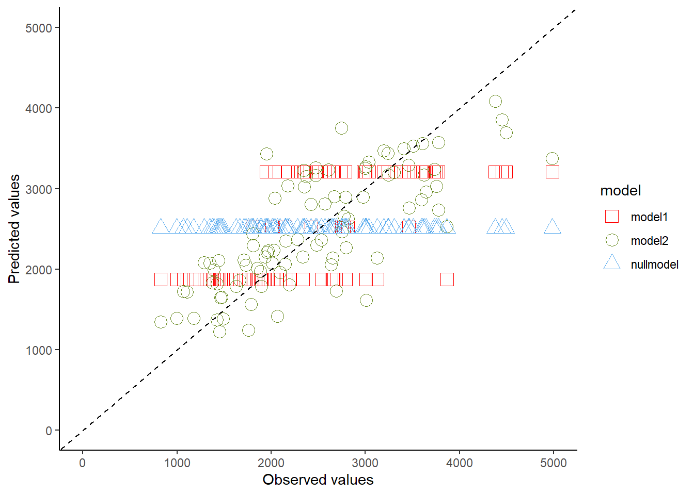
Based on the previous plot that compares predicted vs observed values, it seems like model2 (with all the predictors) looks the best.
Now, make a plot of predicted values against the residuals for Model 2 only. But first, the residuals have to be estimated in the lm2_predict dataframe.
#Creat a new variable 'residuals' which is calculated as the difference of predicted and observed values
lm2_predict <- lm2_predict %>% mutate(residuals = .pred - Y)And then plotting the predicted values against residuals
#Creating the graph using ggplot
ggplot(lm2_predict, aes(x= .pred, y= residuals))+
geom_point(size= 4, color= "olivedrab4")+
geom_abline(intercept = 0, slope = 0, linetype = "dashed", color = "black")+ #Intercept line
ylim(-2500, 2500)+ #Make Y axis consistent
theme_classic()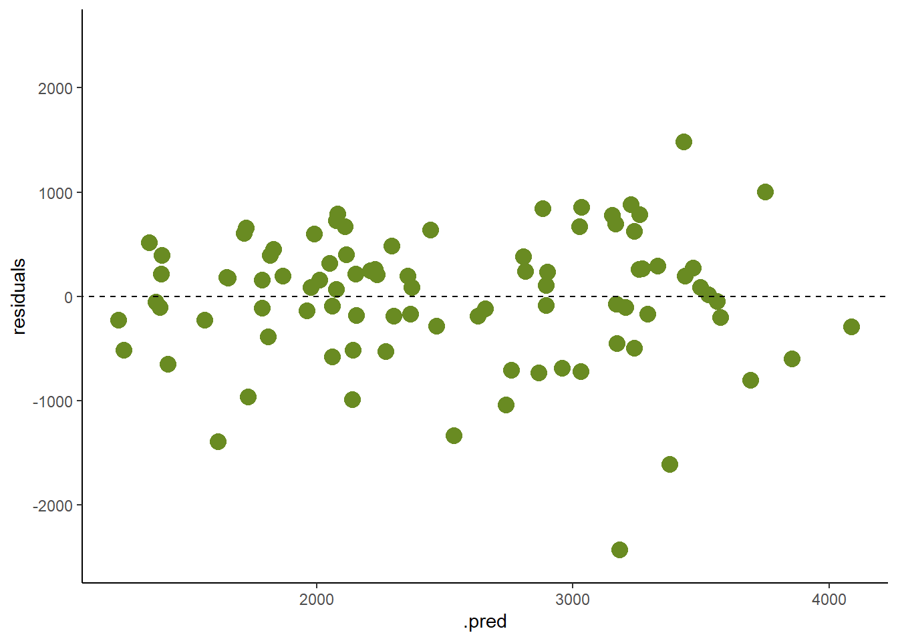
Overall the pattern of residuals seems consistent, except that there are more negative values that also have higher values.
Model Predictions and Uncertainty
Here, focusing on the bootstrap method to sample the data from model 2 and then get the uncertainty. First, setting the same seed used at the beginning and then use the bootstraps function to create 100 bootstraps on the train data.
# Set Seed for reproducibility
set.seed(rngseed)
#Create 100 bootstraps on the 'train_data'
model2_boot <- bootstraps(train_data, times = 100)Now, creating a loop to fit the model to each of the bootstrap samples and make predictions from the model for the train data.
#Create an empty vector to store predictions list
bootpreds_list <- list()
#Loop through each bootstrap sample
for (i in 1:length(model2_boot)) {
# Extract the current bootstrap sample
bootstrap_sample <- analysis(model2_boot$splits[[i]])
#Fit a linear model
lm_model <- lm(Y ~ ., data = bootstrap_sample)
#Make predictions on the original train_data
bootpreds <- predict(lm_model, newdata = train_data)
#Store predictions in the dataframe
bootpreds_list[[i]] <- bootpreds
}
#Print predictions for the first model
print(bootpreds_list)[[1]]
1 2 3 4 5 6 7 8
3084.735 1998.729 2527.558 2283.053 2806.086 1415.609 2476.717 2099.378
9 10 11 12 13 14 15 16
1681.042 2534.831 1575.519 1811.317 2246.109 3063.664 2188.941 2292.070
17 18 19 20 21 22 23 24
3227.270 2640.686 2323.243 3167.282 3674.273 3031.556 1333.353 2505.346
25 26 27 28 29 30 31 32
2879.507 2783.598 2305.497 1398.094 1476.571 1837.161 2569.122 3436.165
33 34 35 36 37 38 39 40
2075.903 1438.036 2099.509 1774.102 2891.023 3382.374 2343.007 1712.864
41 42 43 44 45 46 47 48
2077.648 2059.700 1808.602 3957.718 3078.213 3272.091 2216.724 2134.993
49 50 51 52 53 54 55 56
3364.379 3257.621 2339.225 2713.541 1948.681 3446.513 2167.568 1840.163
57 58 59 60 61 62 63 64
2883.719 2028.832 3025.070 2128.212 3090.626 1961.302 1306.096 3207.548
65 66 67 68 69 70 71 72
1591.039 3007.527 3104.385 1347.219 2355.533 2095.333 2784.010 2669.076
73 74 75 76 77 78 79 80
2170.289 2323.098 1732.052 1718.211 2997.105 2789.700 1382.215 2747.932
81 82 83 84 85 86 87 88
2225.858 2909.426 1656.299 3424.824 2762.856 1793.212 1731.601 3013.997
89 90
3268.912 3115.217
[[2]]
1 2 3 4 5 6 7 8
3376.975 1872.912 2244.979 1906.853 3043.755 1116.333 2292.748 1837.015
9 10 11 12 13 14 15 16
1428.758 2104.267 1379.241 1698.682 2407.744 3325.636 1876.915 2137.882
17 18 19 20 21 22 23 24
3563.634 3044.656 1979.685 3338.926 3978.943 3332.196 1020.812 2391.011
25 26 27 28 29 30 31 32
3169.415 3166.660 2475.079 1278.410 1490.930 1891.224 2863.524 3671.860
33 34 35 36 37 38 39 40
1927.730 1210.536 1943.516 1581.224 3282.906 3822.072 2060.433 1670.229
41 42 43 44 45 46 47 48
1819.443 1945.562 1716.001 4067.683 3283.692 3591.572 1920.605 1972.617
49 50 51 52 53 54 55 56
3533.643 3595.244 2151.874 2916.625 1683.835 3623.282 2079.577 1551.467
57 58 59 60 61 62 63 64
2957.227 1785.585 3384.408 1849.165 3252.174 1741.316 1119.567 3427.821
65 66 67 68 69 70 71 72
1563.286 3339.309 3525.410 1300.674 2080.718 1901.031 2860.486 2386.199
73 74 75 76 77 78 79 80
2018.961 1945.093 1515.571 1479.250 3178.678 3150.289 1183.371 2945.918
81 82 83 84 85 86 87 88
2091.501 3202.676 1528.190 3777.354 2960.311 1559.572 1617.903 3290.382
89 90
3628.922 3359.884 And now estimating the Median and 89% Confidence Intervals of the predictions. First, converting the list to a dataframe.
#Convert the list to a dataframe 'bootpred_df'
bootpred_df <- data.frame(do.call(cbind, bootpreds_list))
# Compute the median and 89% confidence intervals for each observation
medians <- apply(bootpred_df, 1, median)
conf_intervals <- apply(bootpred_df, 1, function(x) quantile(x, c(0.055, 0.945)))
# Combine median and confidence intervals into the 'results_df' dataframe
results_df <- data.frame(Median = medians, Lower_Interval = conf_intervals[1,], Upper_Interval = conf_intervals[2,])
#Combine the 'results_df' and 'bootpred_df' and the '.pred' column from the original df that fitted the model 'lm2_predict'
bootpred_df <- cbind(bootpred_df, results_df, lm2_predict$.pred, lm2_predict$Y) %>%
rename(median = 'Median', lower = 'Lower_Interval', upper = 'Upper_Interval', predictions = 'lm2_predict$.pred', observed = 'lm2_predict$Y') #Rename some of the columnsNow, creating a graph that plots the predicted values and the observed values of the original model fitting, adding the median and the 89% confidence intervals obtained from the bootstrap.
#Create the plot
ggplot(bootpred_df, aes(x = observed, y = predictions))+
geom_point(aes(y = predictions), color = "orangered2", size= 2)+ #Plot the predicted values
geom_point(aes(y = median), color = "steelblue2", size= 2)+ #Plot the median
geom_errorbar(aes(ymin = lower, ymax = upper), color = "black", width = 0.2)+ #Draw the upper and lower CI limits
geom_abline(intercept = 0, slope = 1, linetype = "dashed", color = "darkgrey")+ #Draw the 45 degree line
xlim(0, 6000)+ #Set the x limits
ylim(0, 6000)+ #Set the y limits
labs(x= "Observed values", y= "Predicted values")+
theme_classic()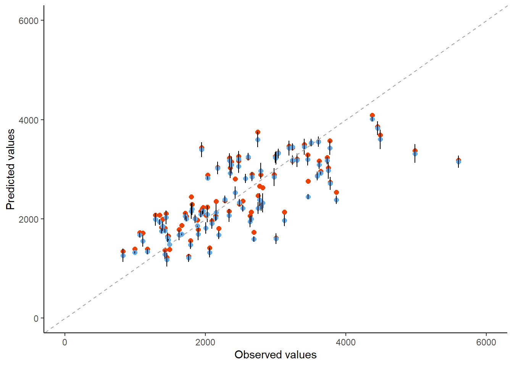
The previous graph plots predicted versus observed values and the 89% confidence intervals. What is observed is that some of the observations have higher uncertainty (black bars) than others but overall they look great. Based on the graph it seems like the model does a good job on predicting Y as a function of all the variables.